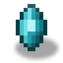
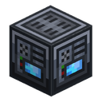
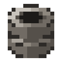

工作站
alaindustrial:workstation
概要
工作站是一台由玩家自行组装的双方块机器：合成两个相同的外壳，一个叠在另一个上面，它们就变成一台带显示器的电脑。拆解同样简单——破坏任意一半，另一半会重新变回外壳，你放进去多少个外壳，就能拿回多少个。
工作站作为普通用电设备接入电网。缓冲区里有能量时屏幕亮起；没电的工作站是暗的。右键点击会在聊天栏回一行字：它是否已组装，以及缓冲区里还有多少能量。
小例子：合成两个外壳，把一个放到另一个上面——会听到组装的咔哒声——再从侧面把 MV 线缆接到下半部分，看着屏幕亮起来。
配方位于科技链的末端。一次合成同时产出两个外壳，也就是正好一台工作站：一颗共振水晶（已充能，水晶链条的顶端）、一块反应堆电路、两个共振线圈、两个强化轴承、一个高级机器外壳，以及两块用作屏幕的玻璃板。每个部件都比普通机器所需的高出一级；对于还没有建成反应堆、也没有种出水晶的玩家来说，这台机器本就不该出现。
组装
只有竖直的一对才会组装：外壳叠在外壳上。规则恰好三条，而且三条都能在游戏里验证：
- 放下一个外壳——如果它下方有外壳，就组成一对，下面那个成为底座。如果下方没有、而上方有，则向上组成一对。
- 朝向取自下半部分。底座就是机器本体，而人们通常自下而上地建造。
- 三个叠在一起的情况解析是确定的：由下面两个组成一对，第三个仍是外壳。
失去一半——无论是用镐、爆炸、活塞还是命令——都会让幸存的一半变回外壳。没有单独的"拆解"操作，也不需要。
能量
| 参数 | 数值 | 配置键 |
|---|---|---|
| 等级 | MV | |
| 缓冲区 | 40000 EU/FE | |
| 从电网接收 | 128 EU/FE/t | |
| 输出 | 0（纯用电设备） | — |
| 运行耗电 | 6 EU/FE/t | |
| 学习一项技能 | 30000 EU/FE |
能量只从下半部分进入，而且只走侧面和背面：正面——玩家所面对的那一面——不导电，这样线缆就不会横穿屏幕伸出接头。未组装的外壳和上半部分完全不接收能量，线缆也不会连到它们。
工作站被声明为储能设备而非机器：在共用电网上，它排在工作中的机器之后。否则它 128 EU/FE/t 的需求会把同一条线缆上 LV 机器的电抢光。
只要立在那里，工作站就在耗电。相对 MV 线路，6 EU/FE/t 并不多，但足以让一座被遗弃的基地把它熄灭：没有电荷，界面打不开，风扇停转，显示器收起。
耗电按实际经过的刻结算，单次结算最多一秒的量。没有供电的工作站每秒进入一次自己的刻，按秒结算；接在带电线缆上的工作站每次能量送达都会被唤醒，于是按刻结算——两种情况下的速率完全一样。"每次进入都扣一整批"就不是一回事了：休眠只是请求而非承诺，而通电的工作站每一刻都会进入自己的刻。
学习每个节点固定花费 30000 EU/FE，与节点深度无关。Ala 碎片的价格本来就随层数递增（1 / 2 / 3 / 4 / 8），再为深层节点多收能量，等于为同一个决定收两次费。相对 40000 EU/FE 的缓冲区，这几乎是一整格电：学习是基地需要提前准备的事件，而不是随手小事。
方块属性
形状。外壳是完整的 16×16×16 立方体，表现与普通实心方块一致。组装后的机器占据两格：下半部分是通高的机柜（进深 0.5…15.5），上半部分是带显示器组件的支架。 显示器侧翼超出方块轮廓约 4 像素。它们看得见但点不到：格子之外的碰撞箱行为不正确，因此轮廓止于方块边界。紧贴放置的相邻方块会把侧翼挡住。 硬度 3.0，爆炸抗性 6.0，金属音效；用镐开采。 活塞推不动工作站——否则一半会被推走，另一半就会变回外壳留在原地。
配方
工作台上一次合成产出两个外壳——正好是一台工作站的份。这是有意为之：两半本来就成对放置，而收两次费就意味着一台电脑要两颗共振水晶。
| 产物 | 材料 |
|---|---|
| 工作站（2 个外壳） | 1 × 共振水晶（已充能）、1 × 反应堆电路、2 × 共振线圈、2 × 强化轴承、1 × 高级机器外壳、2 × 玻璃板 |
每个部件都比普通机器所需的高出一级：不是能量水晶，而是共振水晶（链条顶端：能量水晶 → 兰波顿水晶 → 共振水晶）；不是铜线圈，而是共振线圈；不是高级电路，而是反应堆电路；不是普通轴承，而是强化轴承。水晶必须是已充能的——这与兰波顿水晶和共振水晶坯的做法一致：下一级的配方吃上一级的已充能水晶。
进程
工作站是科技链的终点，而不是进入 MV 的入口。经由共振水晶，它牵出水晶温室（空间水晶与共振碎片）和 III 级能量凝块；经由反应堆电路，牵出核能分支（钯）；经由强化轴承，牵出机械分支（强化青铜板、普通轴承、银金合金齿轮）；经由高级外壳，牵出石油分支（橡胶）。无论按什么顺序发展，都不可能在建成反应堆、种出水晶之前造出它——这是刻意的：给玩家永久加成的机器，正是通关整个模组的那台。
相关
个人档案 —— 工作站从中取得 Ala 碎片的生涯统计与熟练度等级：每赚得一级给一枚（起始的第一级不算），也就是到四十级时共 39 枚，而整棵树要 72 枚。
合成
有序合成
glass
glass

▶
×2
工作站